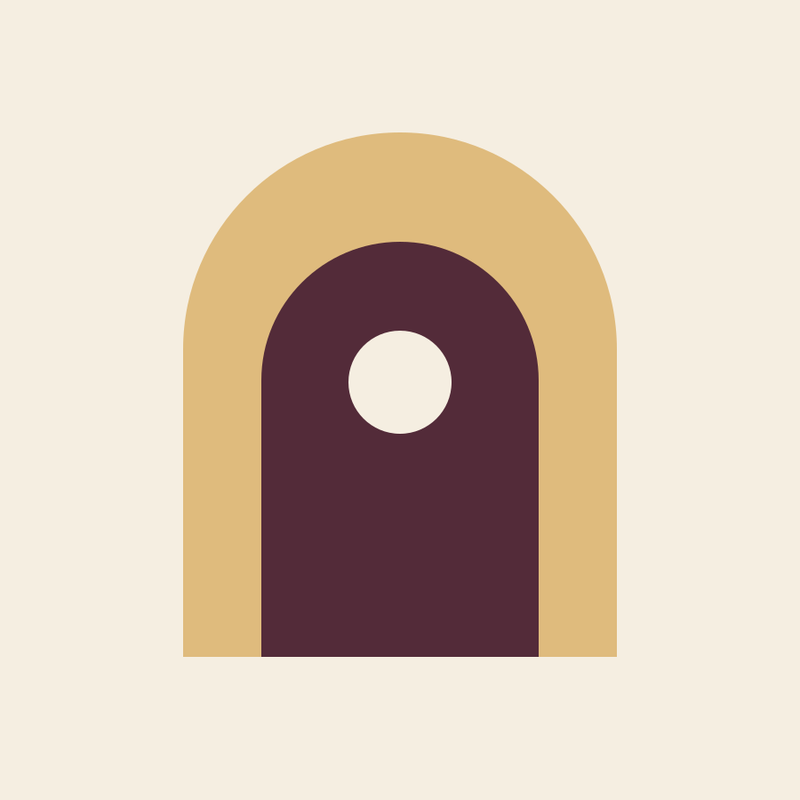
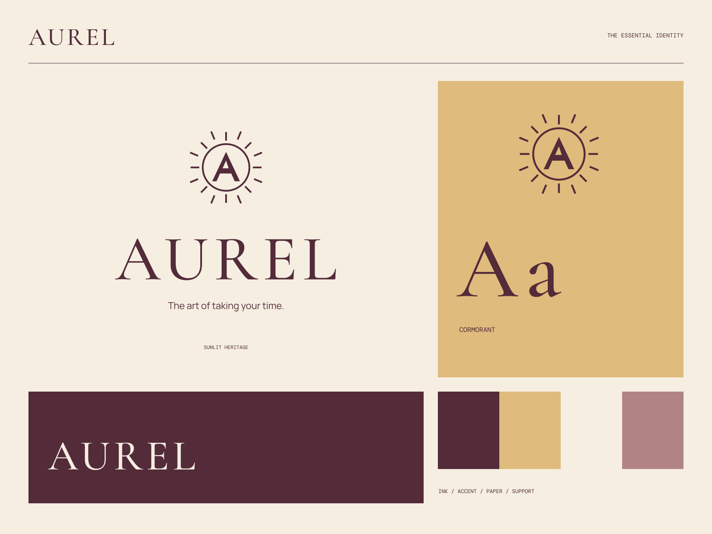

01
Rooms with a rhythm
Thoughtful spaces, warm materials, and time to settle in.
AUREL / ROOMS & SMALL PLEASURES
The art of taking your time. An invitation to slow down.

A coherent little world
An invitation to slow down. The art of taking your time.
01
Thoughtful spaces, warm materials, and time to settle in.
02
Seasonal pleasures and the simple grace of eating well.
03
Stay close to the neighborhood, and a little closer to yourself.

The point of view
A contemporary sun medallion, engraved-looking hairlines, linen-colored stationery, and generous serif setting. The system feels like a beautifully kept personal invitation.